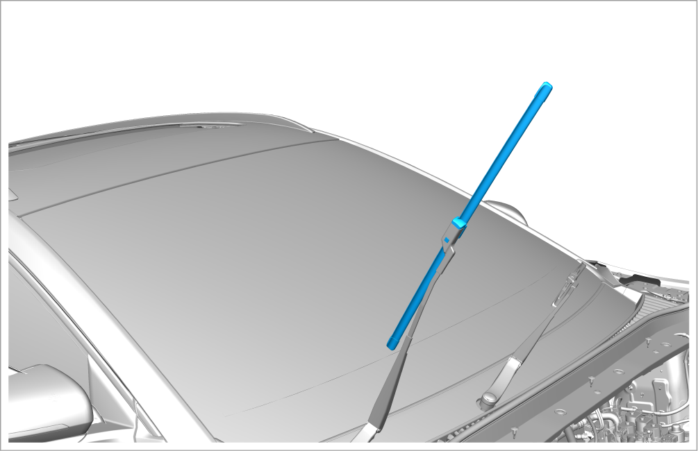

Inspection of Wiper Blade State

The front and rear wiper blades are checked in the same way.
Inspection steps
-
Power on the vehicle (OK mode).
-
Operate the "inching wiping" function. In case of unclean wiping, water film or abnormal sound, it indicates that the wiper blade is damaged and needs to be replaced. Refer to Front Wiper Left Wiper Blade Assembly - Removal and Installation orFront Wiper Right Blade Assembly - Removal and Installation
-
Go to the Infotainment system → Vehicle health → Repair and maintenance setting interface to enable front wiper repair function.
-
At this time, the wiper automatically rotates to the maintenance position for easy maintenance and replacement.
-
-
Power off the vehicle.
-
Hold the upper end of the wiper arm and carefully lift the wiper arm and blade assembly. If there is aging or crack, it indicates that the wiper blade is aged and does not function well. It is necessary to replace it. Refer to Front Wiper Left Wiper Blade Assembly - Removal and Installation orFront Wiper Right Blade Assembly - Removal and Installation
Caution
-
Do not open the hood when lifting the wiper arm; otherwise, both the hood and wiper arm will be damaged.
-
During removal of the wiper blade, be sure to firmly fix the wiper arm after lifting it, and then put it down gently after removal. Otherwise, if the wiper blade is not installed, the wiper arm will rebound and hit the windshield due to external force, which may damage the windshield.
 -
-
Obtain a new work order for replacement.